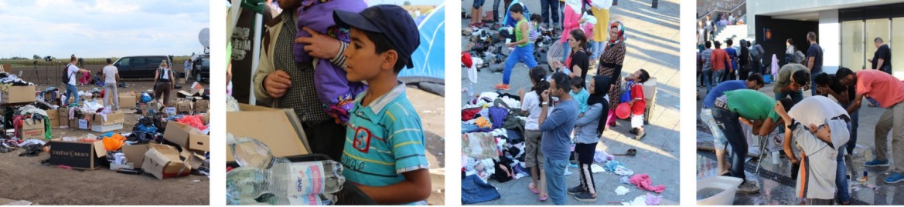

More Website Templates @ TemplateMonster.com - October 06, 2014!

FAQs
- F: Was passiert mit den Spenden?
- F: Wie oft seid Ihr vor Ort?
- F: Wie kann ich euch unterstützen?
- F: Bekomme ich eine Spendenquittung?
- F: Wo kann ich die Sachspenden abliefern und wann?
- F: In welcher Form möchtet ihr die Sachspenden haben?
- A: Die Sachspenden werden regelmäßig zu den Brennpunkten in den EU-Grenzstaaten gefahren und an die Flüchtlinge verteilt. Darüber hinaus kaufen wir vor Ort das tagesaktuell nötige, woran es an den Menschen fehlt (Babynahrung, Obst, Wasser, Hygieneartikel, etc.)
- A: Wir versuchen so oft wie möglich vor Ort zu sein. Das hängt selbstverständlich von der Spendenbereitschaft und den vorhandenen Spenden ab, da wir nur mit einer entsprechend großen Menge an Sachspenden sowie der entsprechenden Höhe an Geldspenden den langen Weg antreten können.
- A: Wir sind für jede Unterstützung dankbar. Sei es in Form von Sach- oder Geldspenden, oder aber auch durch Eure Hilfe vor Ort in unserem Lager, in der Karlstr. 36 in München. Dort könnt ihr uns gerne an den Spendenannahmetagen (siehe Termine auf der Startseite) beim sortieren der Bekleidungsstücke helfen.
- A: Ja, allerdings erst nachdem wir den bürokratischen Prozess der Anmeldung komplett hinter uns haben.
- A: Unser Lager befindet sich in der Karlstrasse 36 in 80333 München. Dort könnt ihr zu den angegebenen Zeiten (tagesaktuell auf unserer Webseite www.erstmal-mensch.org) vorbeischauen.
- A: Idealerweise sollten die Sachspenden in Plastiksäcken angeliefert werden, da im Falle von Regen Kartonagen schnell durchnässen und den Inhalt beschädigen können. Schuhe bitte zusammenbinden, damit keine paarlosen Schuhe verloren gehen.
Was Spenden?
- Winterjacken
- warme Pullover
- Winterschuhe
- warme Decken
- Schlafsäcke
- Isomatten
- Zelte
Wo & wann?
- Montags: 16:00 bis 18:00
- Mittwochs: 18:00 bis 20:00
- Samstags: 12:00 bis 14:00
-
Adresse:
Karlstr. 36
80333 München